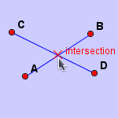
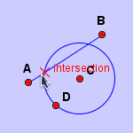
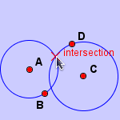
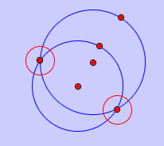

Intersect
Click two elements to construct the intersection of them. The elements can be lines or circles. This action can be achieved with a more convenient way: Use mode "Add a Point" and click the intersection of two elements. For example,
Intersection Of Two Lines.

Intersection of a Line and a Circle.

Intersection of Two Circle

NOTE:
If one object of the two objects is a circle, then generally there two solutions. Use the mouse to choose any one.

JGEX Help